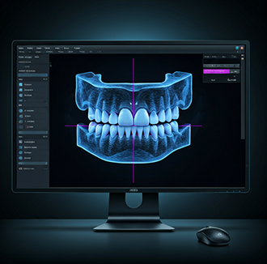
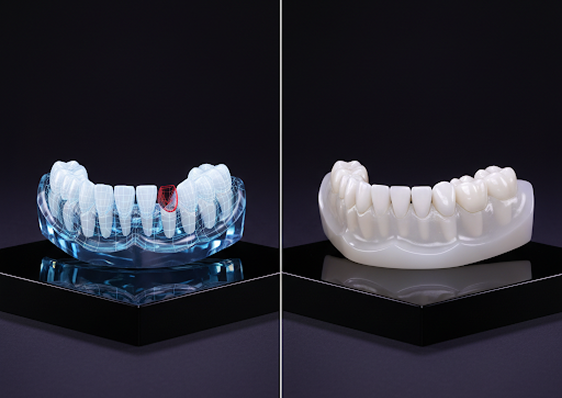

DISPONIBLE PARA PEDIDOS GLOBALMENTE
Dominio de flujos de trabajo complejos en Exocad para acortar la distancia entre los requisitos clínicos y la perfección estética. Especialización en artesanía dental restauradora de alta gama.

Elevating restorative dentistry through precision digital planning and biocompatible material science.
Monolithic Zirconia or Pekkton frameworks with high-end aesthetic layering protocols.
DICOM / STL Merging
Nerve Mapping
Bone Reduction Guides

Monolithic Zirconia or Pekkton frameworks with high-end aesthetic layering protocols.
2D/3D facial integration using Exocad Smile Creator for predictable aesthetic outcomes.
Leveraging advanced scripting and custom library integration to provide restorations that fit perfectly and look natural.
Experience interactive 3D cases rendered directly from our Exocad workflow. Toggle materials and inspect restorations with surgical precision.
Our digital-first approach eliminates the inconsistencies of manual modeling. See the transformation from a compromised dentition to a digitally mastered restoration.
1
Intraoral Scan: High-resolution digital impressions eliminate uncomfortable manual putty molds.
2
Dynamic Analysis: Occlusal simulation ensures long-term stability and functional comfort.
